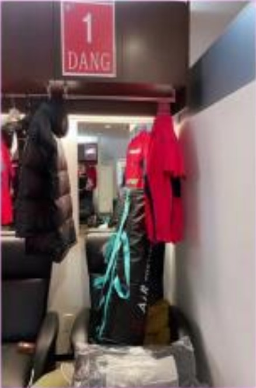

Văn Lâm khoe tủ đồ riêng ở CLB Cerezo Osaka

Half your Plate is a healthy living initiative developed to educate and empower Canadians of all ages to eat more fruits and veggies to improve their health while providing simple and practical ways to add a variety of produce to every meal and snack. Half Your Plate is fun, practical and informative while providing tips on how to prepare furits for meal and snacks at home, at school, at work, eating out or on the go.